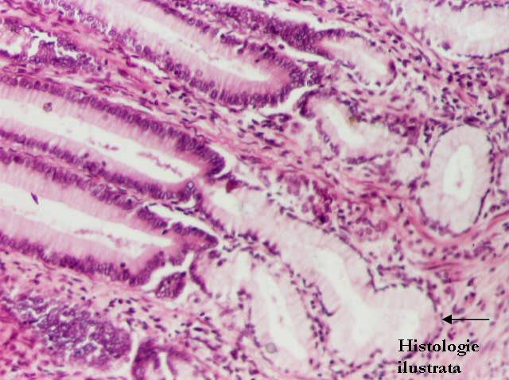
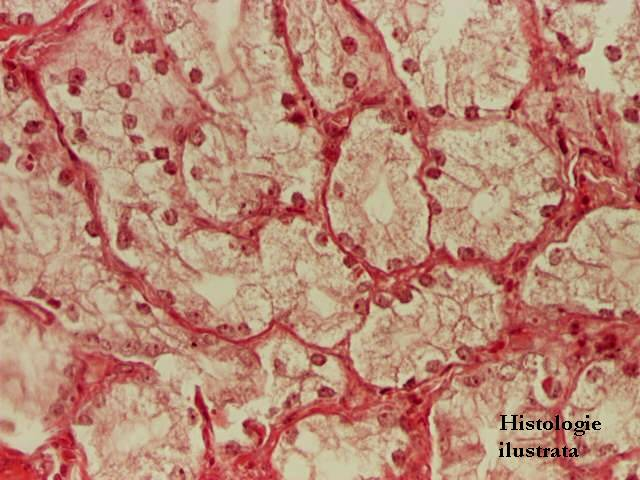
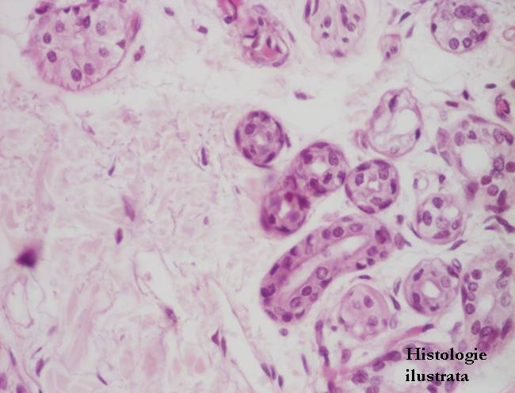

Cap.1 - Ţesutul epitelial
1.3. Ţesutul epitelial secretor
Ţesutul epitelial secretor exocrin (glande exocrine)
Glande cu adenomer tubular


Fig. 41 - Glande tubulare simple drepte (glande Lieberkühn) – jejun, H.E. X 40
Fig. 42 - Glande tubulare simple drepte (glande Lieberkühn) – jejun, H.E. X 200
Fig. 43 - Enterocite şi celule caliciforme în glanda tubulară simplă dreaptă (glanda Lieberkühn) – jejun, H.E. X 400
Fig. 44 - Celule Paneth în glanda tubulară simplă dreaptă (glanda Lieberkühn) – duoden, H.E. X 100





Fig. 46 - Glandă tubulo-ramificată – glanda pilorică,
H.E. X 100
Fig. 47 - Glandă tubulo-ramificată – glanda pilorică,
H.E. X 200
Fig. 48 - Glandă tubulo-ramificată – glanda Brünner, duoden H.E. X 200




Fig. 49 - Glandă tubulo-glomerulată – glanda sudoripară, piele, H.E. X 100
Fig. 50 - Adenomere (a.) şi canale de excreţie (c.) ale glandei sudoripare – piele, H.E. X 200